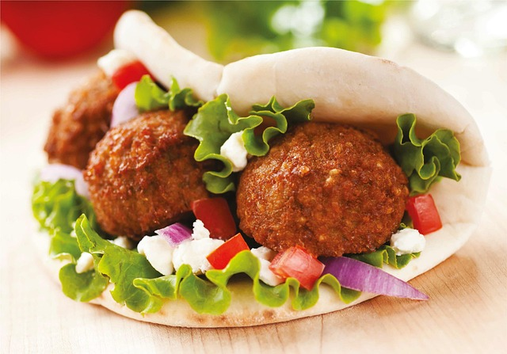

Falafel

Serves: 18 balls
Active Time: 45min | Total Time: 55min
Ingredients
- 1 cup dried chickpeas, soaked overnight (don't use canned chickpeas)
- ½ cup roughly chopped onion
- 1 cup roughly chopped parsley, about a one large bunch
- 1 cup roughly chopped cilantro, about a one large bunch
- 1 small green chile pepper, serrano or jalapeno pepper
- 3 garlic cloves
- 1 teaspoon cumin
- 1 teaspoon salt
- ½ teaspoon cardamom
- ¼ teaspoon black pepper
- 2 tablespoons chickpea flour (or other flour)
- ½ teaspoon baking soda
- oil for frying
Directions
- Soak your dried chickpeas overnight or for at least 8 to 12 hours. Note that the chickpeas will triple in size, so cover them with plenty of water. Then drain and rinse them.
- Pulse all the ingredients to a food processor. Add the chickpeas, onion, parsley, cilantro, garlic, green pepper, and spices to a food processor. I recommend roughly chopping up the onion, herbs, and pepper before adding for the best texture. Then, pulse the food processor but do not blend completely. The final mixture should resemble coarse sand.
- Chill the falafel. Transfer the falafel mixture to a bowl and add the chickpea flour and baking soda. Stir together, then cover or add a lid and refrigerate the mixture for 30 minutes to one hour.
- Shape the falafel. Use your hands, an ice cream scoop or falafel scoop to form the falafel into balls or patties. If you find the mixture is too wet, you can add another tablespoon of chickpea flour. If it's too dry and crumbly, you can add a teaspoon or two of water or lemon juice.
- Cook the falafel. Pre-heat your oven to 425°F (220°C). Lightly spray or brush a baking sheet with oil. Place the falafel on the baking sheet, lightly spray or brush the top side with oil, and bake for 25 to 30 minutes, flipping halfway through. You can also bake them on parchment paper or a silicone mat without any oil. They'll just be slightly less crispy and golden.
Notes
- Serve with Hummus or Lemon Garlic Tahini Sauce and Sweet Potato Tortillas
- Can make dough or balls ahead of time and freeze for up to 3 months. Thaw dough in the fridge, stir it, then form in balls or patties and cook. Or freeze cooked falafel and microwave or bake straight from frozen.